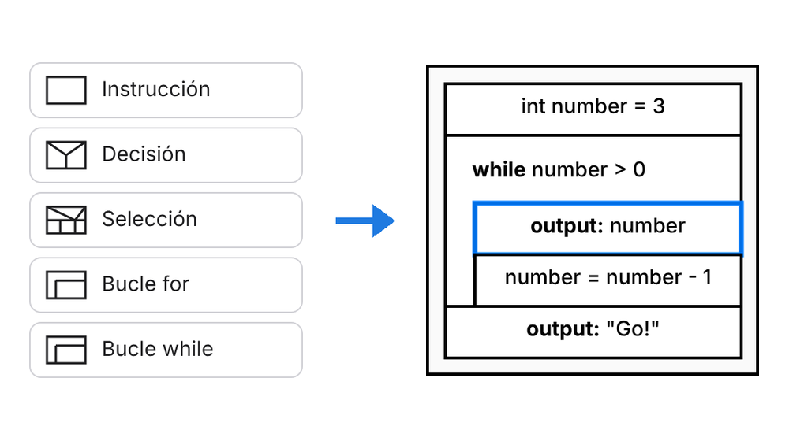
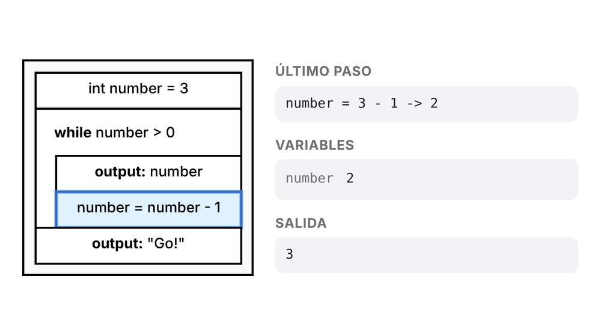

Construir arrastrando
Arrastra instrucciones, bifurcaciones, bucles y selecciones desde la paleta al diagrama y escribe el texto directamente.
Gratis · sin registro · sin instalar nada
Con VisuStruct diseñas algoritmos como structogramas de Nassi-Shneiderman: arrastra elementos, ejecútalos paso a paso y conviértelos en código Java, Python o JavaScript.
Funciona en ordenador, tableta y móvil. Tus archivos se quedan en tu dispositivo.
Cómo funciona

Arrastra los bloques al structograma y describe cada paso con palabras sencillas o en código.

Inicia la simulación y sigue bloque a bloque cómo cambian las variables.

Genera Java, Python o JavaScript y continúa en tu entorno de desarrollo.
Funciones
Un editor pensado para clase: claro, preciso y sin distracciones.
Arrastra instrucciones, bifurcaciones, bucles y selecciones desde la paleta al diagrama y escribe el texto directamente.
La simulación resalta el bloque activo y muestra variables y salida, para que veas al instante si tu algoritmo funciona.
VisuStruct convierte tu structograma en Java, Python y JavaScript. JavaScript se ejecuta directamente en el navegador.
Guarda como PNG, SVG o PDF, o imprime directamente, para fichas y exámenes.
La interfaz habla español, inglés, alemán, turco, ucraniano, árabe y muchos más.
Sin cuenta y sin subir nada. Tu trabajo se guarda como archivo .visustruct en tu dispositivo.
Área de aprendizaje
Junto al editor hay un área de aprendizaje: las lecciones explican cómo usar el editor y qué son la secuencia, la bifurcación y los bucles. Lo que lees lo pruebas justo al lado.
Tu progreso se guarda en tu navegador. Por ahora las lecciones están en alemán; pronto habrá más idiomas.

Más versiones
Todas las versiones usan el mismo formato .visustruct. Empieza en el navegador y sigue en la app, o al revés.

La app nativa SwiftUI del App Store, también sin conexión.

Descarga como .jar (requiere Java, por ejemplo Adoptium / Eclipse Temurin).
Descargar la aplicación JavaPiensa primero en la lógica y el flujo. Después traduces la misma estructura al lenguaje de programación que prefieras, paso a paso y de forma comprensible.
Pruébalo ahora